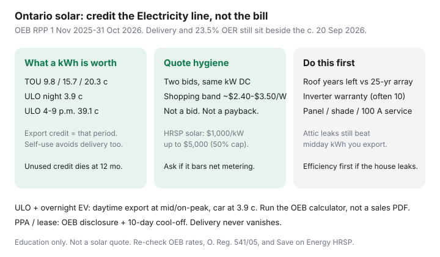

Utilities · Ontario
Is home solar worth it in Ontario in 2026? A bill-first framework
Ontario solar pitches still talk like microFIT and skip the part of the bill that is poles and wires. A kilowatt-hour your array exports is worth the Electricity price at that hour — 9.8, 15.7, or 20.3 cents on TOU through 31 October 2026, or the ULO period price if that is your plan. It is not worth the whole-bill average on your July statement. Delivery stays.
This is a bill-first framework. Learn the credit machine in net metering basics, then run the OEB calculator with your LDC. If the house leaks, start with air sealing instead of a 25-year roof contract.
Key takeaways
- OEB RPP (1 Nov 2025–31 Oct 2026): TOU 9.8 / 15.7 / 20.3 ¢; ULO overnight 3.9 ¢ and weekday 4–9 p.m. 39.1 ¢; Tiered 12.0 then 14.2 ¢. The 23.5% OER sits on the eligible base — switching to solar does not delete delivery.
- Net-metering credits offset consumption kWh only and expire after 12 months. Self-use is worth more than export because you also avoid some variable delivery.
- ULO + overnight EV: cheap charging, daytime export at whatever period the sun hit. Size and plan choice together.
- Treat $2.40–$3.50/W as a September 2026 shopping band, not a bid. HRSP solar ($1,000/kW, max $5,000, 50% of eligible cost) needs a live check and a written answer on net-metering compatibility.
- Roof years left, inverter warranties (often ~10 years), and a 100 A panel are first-class costs.
How Ontario retail rates and delivery affect solar bill-credit value
The OEB sets the Electricity line. Your LDC sets delivery (and the OEB approves those rates too). Net metering, per the OEB’s consumer page, gives you a credit for renewable kWh you sent to the grid that can be used only against charges related to electricity consumption. Fixed monthly service charges, many delivery blocks, regulatory lines, and HST do not vanish because you have panels.
So a quote that says “wipe 80–90% of the bill” needs to show your 12-month kWh, your plan, and a delivery line that still looks like a delivery line. Run the official calculator. Green Button / interval data helps if you have an EV or electric heat.

Net metering vs self-consumption emphasis
Two honest designs:
- Net-metered, grid-tied. You export midday surplus and draw at night. Credits follow the RPP period of the export. Oversizing past your annual kWh is how you donate leftover credits at month 13.
- Self-consumption / load displacement. You try to run the dryer, the heat-pump water heater, or a battery when the roof is producing. Some Home Renovation Savings solar rules are built around on-site use. Third-party blogs say HRSP and net metering cannot coexist on the same system. Treat that as a question for the program and the LDC in writing, not as a statute you read on a forum.
HRSP solar, on the Save on Energy / Enbridge page we used: $1,000 per kW DC, capped at the lesser of $5,000 or 50% of eligible costs; battery $300/kWh up to $5,000 / 50%. Pre-approval matters. Amounts move.
Interaction with TOU and ULO (daytime export vs overnight EV load)
TOU hours flip 1 May and 1 November. Midday in summer is on-peak (11 a.m.–5 p.m. weekdays) — a sunny export can be worth 20.3¢. Midday in winter is mid-peak (11 a.m.–5 p.m.) — 15.7¢. Weekends are off-peak all day (9.8¢). ULO hours do not flip: overnight 3.9¢, weekday 4–9 p.m. 39.1¢, and a mid-peak band the rest of the weekday.
An EV on ULO that charges at 3 a.m. is a great ULO customer and a so-so solar customer unless you also charge from the roof on weekends or add a battery. A heat pump that recovers at 5 p.m. on ULO is an expensive neighbour to a solar array. Choose the plan with the ULO EV guide and the solar quote on the same table.
Installed cost ranges to update at draft — avoid stale $/W claims
We are not going to pretend a single Canadian average is a bid. In September 2026, public installer and calculator write-ups often cited about $2.42–$3.50 per watt installed in Ontario, implying roughly $19,000–$28,000 before incentives for an 8 kW DC array — with complicated roofs and premium hardware above that. Use it only to spot a quote that is $5.00/W “because rebates” or $1.80/W with no interconnection, permit, or scaffolding.
- Get two quotes on the same kW DC, same roof planes, same inverter type (string vs micro).
- Ask for production in kWh using a Canadian weather file, with snow and shade losses shown.
- Subtract only rebates you can name and pre-approve.
- Divide by a conservative annual bill reduction — Electricity-line credits plus avoided self-use, not 90% of the whole bill.
Roof life, inverter warranties, and maintenance
Panels are often warranted 25 years for a degraded output, not for “like new.” Inverters and some optimizers are commonly 10–12 years. Budget a replacement. Microinverters fail one module at a time; string inverters fail the roof. Someone has to climb in January. Ask who, and what a service call costs after year five. Keep trees honest; a maple you love will shade a south plane.
If the shingles have under 10 years left, price a reroof in the same season. Tearing off a three-year-old array to fix a leak is how solar becomes the most expensive attic hatch in the neighbourhood.
When efficiency upgrades beat panels first
Do the envelope and the dumb watts when:
- The attic is below the NRCan zone target or the hatch is a hole.
- You are on electric resistance heat and have not priced a heat pump — leaking kWh at COP 1 is expensive even at 9.8¢.
- The panel is 100 A and a heat pump plus solar plus EV is three projects pretending to be one Saturday.
- You will sell within five years and the buyer will not pay you for the array at your remaining book value.
Then, if the roof is ready and the bill-first worksheet still works without Greener Homes nostalgia, get the interconnection in the quote — not as a verbal “the utility always says yes.”
Sources & date stamps
- OEB electricity rates — RPP 1 Nov 2025–31 Oct 2026; 23.5% OER context in the TOU companion (used 20 Sep 2026).
- OEB net metering — consumption-only credits; 12-month expiry; PPA cooling-off.
- OEB bill calculator — run with your LDC before you sign.
- Home Renovation Savings solar stream — $1,000/kW up to $5,000 / 50%; battery $300/kWh up to $5,000 (verify live; ask about net-metering compatibility).
- NRCan home energy-efficiency — envelope-first framing; no new Greener Homes rooftop grant.
Frequently asked questions
Do solar credits cancel delivery charges?
No. OEB net-metering credits offset electricity consumption charges only. Delivery, regulatory charges, and tax still appear. Self-consumed kWh avoid both the Electricity line and some variable delivery — exports do not.
How long do unused credits last?
Up to 12 months, then they go to $0 (O. Reg. 541/05, s. 8(8)). Oversizing for a future EV you have not bought yet is how credits expire.
Does ULO make solar worse?
It can. Overnight EV charging at 3.9¢ is cheap. Midday exports earn the TOU/ULO period price at the moment of export. Dinner recovery at 39.1¢ is expensive if you heat or cook then. Run the OEB calculator.
What installed cost should I believe?
None from a blog. Shopping bands in September 2026 often land around $2.40–$3.50/W before incentives for competitive Ontario rooftops. Get two bids on the same kW. HRSP solar ($1,000/kW up to $5,000, 50% cap) is a live-check item and may restrict net metering — ask.
Should I do the attic before panels?
If the hatch whistles, yes. kWh you do not leak are worth more than kWh you export and buy back at dinner. See the upgrade-order companion.